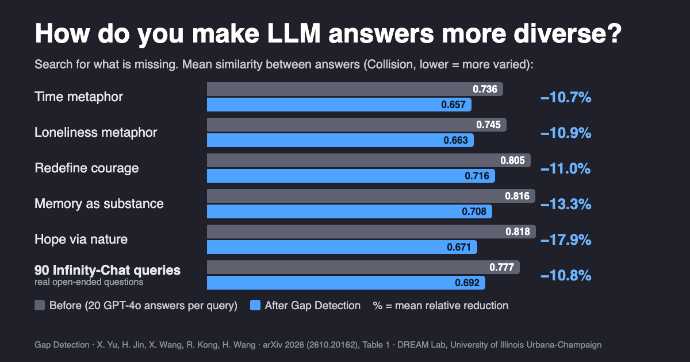
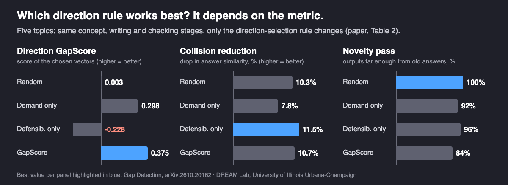

How to Make LLM Answers More Diverse: Search for the Gaps
Language models keep landing on the same few answers. Instead of sampling again and hoping, you can map what has already been said and search for what is relevant but still missing.
By Xucheng Yu, Haibo Jin, Haohan Wang, and others · · About our 2026 arXiv preprint (arXiv:2610.20162)
Ask a language model for a metaphor about time, and you will probably get a river. Ask again, or ask a different model, and you will often get a river again, or weaving. How do you make LLM answers more diverse in substance, not just in wording? Our paper, Gap Detection: Mitigating Homogenization through Demand and Defensibility, by Xucheng Yu, Haibo Jin, Xiaoqi Wang, Runze Kong and Haohan Wang (University of Illinois Urbana-Champaign, Starc Institute and University of Michigan), treats it as a search problem: put the question and the answers already given into one embedding space, and look for a direction that is relevant to the question but far from every existing answer. On 90 real open-ended questions from Infinity-Chat, the answers this produced lowered average similarity by 10.8%.
Key findings
- Gap Detection (Yu et al., University of Illinois Urbana-Champaign, arXiv 2026) makes LLM answers more diverse by searching an embedding space for directions that score high on GapScore, the product of relevance to the question (Demand) and distance from the nearest existing answer (Defensibility).
- On 90 open-ended questions from the Infinity-Chat dataset, Gap Detection lowered mean answer similarity (Collision) from 0.7766 to 0.6915, a mean relative reduction of 10.8%, and its best new sentence passed the novelty check for 88 of 90 questions (97.8%).
- On five creative topics with 20 GPT-4o answers each, the reported mean relative reduction in Collision was 12.8%, ranging from 10.7% for a metaphor about time to 17.9% for describing hope through natural elements.
- Used to augment synthetic sentiment data (SST-2, 100 training examples per method), Gap Detection lowered Collision from 0.324 to 0.298 and raised the Vendi Score from 27.16 to 29.20 compared with undirected data accumulation; the accuracy difference was one test example out of 40.
Why do LLMs give the same answers to open-ended questions?
The effect is well documented. Artificial Hivemind: The Open-Ended Homogeneity of Language Models (and Beyond) (Jiang, Chai, Li, Liu, Fok, Dziri, Tsvetkov, Sap, Albalak and Choi, NeurIPS 2025 Datasets and Benchmarks, oral) collected Infinity-Chat, 26K real open-ended user queries, and found that a single model keeps repeating itself and, more strikingly, that different models produce very similar outputs. The authors call it the Artificial Hivemind effect. Verbalized Sampling: How to Mitigate Mode Collapse and Unlock LLM Diversity (Zhang, Yu, Chong, Sicilia, Tomz, Manning and Shi, 2025) offers one cause: people who rate model outputs during post-training tend to prefer familiar, typical text, which pushes models toward the most typical answer.
For a person who wants a different perspective, a reworded river is not a new answer. The Gap Detection paper starts from a simple distinction: sampling another answer is not the same as identifying an answer that is missing. Changing the temperature or the decoding rule changes which tokens come out, but nothing in it represents what the existing answers already cover. Pushing away from previous answers alone does not work either: the farthest point from every river metaphor may have nothing to do with time.
Key terms
- Homogenization
- The tendency of language models to give semantically similar answers to questions that have many reasonable answers.
- Occupied set
- The content that already exists, such as earlier answers, competitors' product claims or a pool of synthetic training examples, which a new item should not repeat.
- Demand
- How relevant a candidate direction is to the question (or weighted set of queries), measured as cosine similarity in an embedding space.
- Defensibility
- One minus the similarity to the nearest occupied item; it measures geometric separation, not factual or commercial validity.
- GapScore
- Demand multiplied by Defensibility, so a direction scores well only if it is both relevant and unclaimed.
- Collision
- The mean pairwise cosine similarity of a set of texts; lower means the set is more varied.
- Vendi Score
- A diversity metric (Friedman and Dieng, TMLR 2023) equal to the exponential of the entropy of a similarity matrix's eigenvalues, read as an effective number of distinct items.
How does Gap Detection find answers nobody gave?
The method works in four steps, shown below.
![Diagram of Gap Detection. Left: a circle stands for the space of embedding directions; a white arrow points from the centre to the query, existing answers sit in a tight cluster at the tip of that arrow, a shaded wedge marks directions relevant to the query, and a blue dot marks a gap direction inside the wedge but away from the cluster, with a dashed line to the nearest existing answer. Right: GapScore equals Demand times Defensibility; four pipeline boxes read Search, Concepts, Write and Check; an example for a metaphor about time shows typical answers rivers and weaving, gap concept words poetic, nighttime and tempo, and the generated sentence 'The night hums a quiet tempo, its stars ticking softly'.](imgs/make_llm_answers_more_diverse/figure_method.png)
- Search. The question and the existing answers are embedded with OpenAI's text-embedding-3-small (1,536 dimensions). The method then climbs GapScore on the unit sphere with projected gradient steps, from 15 restarts per starting strategy (towards the question, near it, and random). The gradient has an intuitive form: one term pulls towards the question, the other pushes away from the nearest existing answer. Each chosen direction is added to the occupied set, so the next search must go somewhere else; the paper uses five directions per question.
- Concepts. A direction is a vector, not an idea. The 20 nearest unused words from a 13,409-word English vocabulary are retrieved; Qwen2.5-3B-Instruct selects up to three that could answer the question, and GPT-4o-mini checks that they fit, for example that a word is not just a synonym of the question.
- Write. GPT-4o-mini writes one sentence around the concept words while being told to avoid the 12 frequent words closest to the centre of the existing answers and their recurring sentence patterns.
- Check. A new sentence is kept only if its similarity to every original answer is below 0.7 and the new sentences differ from each other (pairwise similarity below 0.8); otherwise the search continues.
Why a product instead of a weighted sum? A sum lets a very high score on one factor hide a zero on the other; with a product, an empty but irrelevant direction scores zero, and so does a relevant direction that duplicates an existing answer. The paper also shows that whenever the question has a component outside the span of the existing answers, a direction with Defensibility of exactly one exists, which gives a lower bound on the best achievable score. With 20 answers in 1,536 dimensions, there is plenty of geometric room; the hard part is finding words for it.
How much more diverse do the answers get?
The main study used five hand-picked creative topics, each with five query variants and 20 GPT-4o answers as the occupied set, plus a second study on 90 manually selected Infinity-Chat queries.

| Evaluation | Collision before | Collision after | Mean relative reduction |
|---|---|---|---|
| Time metaphor | 0.7362 | 0.6573 | 10.7% |
| Loneliness metaphor | 0.7449 | 0.6634 | 10.9% |
| Redefine courage | 0.8046 | 0.7160 | 11.0% |
| Memory as substance | 0.8163 | 0.7080 | 13.3% |
| Hope via natural elements | 0.8178 | 0.6712 | 17.9% |
| Five-topic mean | 0.784 | 0.683 | 12.8% |
| 90 Infinity-Chat queries | 0.7766 | 0.6915 | 10.8% |
Lower Collision means less similar answers; from Table 1 of the paper. The largest single-query reduction among the 90 queries was 20.5%.
Two transfer tests matter for practice. When each of four models (GPT-4o-mini, Claude-Sonnet-4.5, Gemini-2.0-Flash and Qwen2.5-3B) supplied its own 20 existing answers, Collision fell for every source, by 8.8% to 12.7% (10.4% on average), so the existing answers need not come from the model that writes the new ones. When the writer changed instead, the reduction was 9.0% with GPT-4o-mini, 11.6% with GPT-4o and 14.8% with Claude-Sonnet-4.5: the search finds the gap, but how well it is expressed depends on the writer.
Do you need both relevance and distance?
The paper's ablation keeps every stage fixed and changes only the rule for choosing directions. The answer is less tidy than a method paper usually reports, and that is useful.

| Direction rule | Direction GapScore | Collision reduction | Novelty pass |
|---|---|---|---|
| Random direction | 0.003 | 10.3% | 100% |
| Demand only | 0.298 | 7.8% | 92% |
| Defensibility only | −0.228 | 11.5% | 96% |
| GapScore (Demand × Defensibility) | 0.375 | 10.7% | 84% |
The product finds the best directions by its own measure, and Demand-only search, which ignores what has been said, gives the smallest reduction in repetition. But Defensibility-only search reduced Collision slightly more, and random directions passed the novelty check most often. The authors read this plainly: the shared concept-filtering and avoidance-prompting stages contribute a lot, and a better direction score does not by itself guarantee better text. The open problem is turning a well-separated, relevant direction into an answer that is measurably better, not just measurably different.
Can the same idea diversify synthetic data and product positioning?
The paper applies the same search in two more settings, each with its own checks.
Synthetic training data. Recursive training on generated data can reduce diversity, and keeping old data alongside new data changes that trajectory. Here the occupied set is the current pool of synthetic SST-2 sentiment examples, demand comes from the class descriptions, and a VADER polarity check filters each new example. After five rounds, with 100 training examples per method:
| Method | Collision (lower = more varied) | Vendi Score | Accuracy (40 test examples) |
|---|---|---|---|
| No intervention (replace the pool each round) | 0.362 | 9.06 | 60.0% |
| Data accumulation (keep pool, add undirected samples) | 0.324 | 27.16 | 60.0% |
| Gap Detection (keep pool, add directed samples) | 0.298 | 29.20 | 62.5% |
From Table 4 of the paper. The 2.5-point accuracy difference is one test example. In separate runs with four different generators, Gap Detection had lower Collision than accumulation every time, but its Vendi Score was 0.74 lower with Qwen2.5-3B.
Product positioning for AI search. In generative engine optimization (GEO), new content should answer what shoppers ask while saying something competitors do not. With Amazon product claims for water filters, protein powder, sports water bottles and yoga mats, Gap Detection proposed new claims and a GPT-4o-mini citation simulation measured how much of an answer cited them. For water filters, the top direction (campground, wilderness, hike) had GapScore 0.410 and a citation share of 0.518; a generic direction (screened, cleansing, reservoir) was cited slightly more, 0.544, but had GapScore 0.135. Being cited and being differentiated are not the same thing. These are proposed positions in a simulation, not verified product facts.
How does this compare with other ways to diversify LLM outputs?
- Measuring the problem. Artificial Hivemind (Jiang et al., NeurIPS 2025) supplies both the motivation and the 90 queries used here. It also shows that reward models and LM judges are less well calibrated to human ratings on answers where people disagree, a reason to be careful about judging diversity with models alone.
- Prompting for a distribution. Verbalized Sampling (Zhang et al., 2025) asks the model to list several responses with their probabilities, which raised diversity in creative writing by 1.6 to 2.1 times over direct prompting without training. It is simpler to deploy than Gap Detection, which needs an embedding model and a search loop. The two act at different points: Verbalized Sampling changes what the model generates in one go, while Gap Detection takes the existing answers as input and targets the space they leave empty. The Gap Detection paper does not compare against it.
- Deciding when diversity matters. Task-Dependent Evaluation of LLM Output Homogenization: A Taxonomy-Guided Framework (Jain, Lanchantin, Nickel, Ross, Ullrich, Wilson and Watson-Daniels, 2025) argues that homogenization is a problem for creative tasks but not for a math answer, and only increases diversity where it is wanted. Gap Detection's concept and plausibility filters play a similar role in a narrower form: a new direction must still fit what the question asks for.
- Reranking with redundancy. Maximal Marginal Relevance (Carbonell and Goldstein, SIGIR 1998) balances relevance against similarity to items already chosen. GapScore shares that idea, but multiplies instead of adds, searches continuous directions instead of reordering a fixed candidate list, and generates new text.
- Synthetic data and model collapse. Is Model Collapse Inevitable? Breaking the Curse of Recursion by Accumulating Real and Synthetic Data (Gerstgrasser et al., COLM 2024) showed that accumulating data across generations, instead of replacing it, avoids collapse in the settings it studied. The Gap Detection experiment asks the next question, whether directing the new samples adds diversity beyond accumulation, in a much smaller classifier setting without retraining a generator.
- Visibility in AI search. GEO: Generative Engine Optimization (Aggarwal et al., KDD 2024) showed that the way content is written can raise its visibility in generative engine answers by up to 40%; the citation measure here is adapted from it. Gap Detection addresses an earlier choice: which position new content should take relative to what competitors already claim.
What this does not show
- No human judgment. Collision, novelty and the Vendi Score are computed with the same embedding model used for the search, and no human evaluation of answer quality is reported. Lower similarity is not the same as better or more creative answers.
- No sampling baseline. The study does not rerun temperature, min-p or other decoding baselines on the same queries, so it does not show how much the method beats simply sampling differently.
- Mixed ablation. GapScore wins on its own direction score but not on every output metric; the authors note that the filtering and prompting stages shared with the baselines contribute substantially.
- Small, hand-picked evaluations. The topics and the 90 queries were selected manually, results are single runs without error bars, and the synthetic-data test uses 10 seed examples per class and 40 test examples with a TF-IDF classifier.
- Simulated GEO. The product study uses a fixed citation simulation, not a live AI search engine, and proposed claims are not checked against any real product. Any real use would need factual verification.
- No code release is listed; the paper provides aggregate results, settings and prompts.
Frequently asked questions
How can I make LLM answers more diverse?
One way is to tell the model what has already been said and ask it for something that is still missing. Gap Detection (Yu et al., arXiv 2026) embeds the existing answers and the question, searches for a direction that is relevant to the question but far from every existing answer, turns that direction into concept words, and has a model write a new answer around them. On 90 Infinity-Chat queries it lowered mean answer similarity by 10.8%.
Why do LLMs give the same answers to open-ended questions?
Research points to mode collapse: post-training pushes models toward a few typical answers, and different models converge on the same ones. Artificial Hivemind (Jiang et al., NeurIPS 2025) documented this repetition within and across models on real open-ended queries, and Verbalized Sampling (Zhang et al., 2025) traces part of it to annotators' preference for typical text.
Does raising the temperature make LLM answers more diverse?
It changes which words are sampled, but it does not tell the model which ideas are already covered, so answers often vary in wording more than in substance. The Gap Detection paper argues for representing the existing answers explicitly; it does not include a matched temperature baseline, so it does not show by how much it beats sampling changes.
How do you measure the diversity of LLM outputs?
A common approach embeds each response and measures similarity. The Gap Detection paper reports Collision, the mean pairwise cosine similarity of a set of responses (lower means more varied), and the Vendi Score, the exponential of the entropy of the similarity matrix's eigenvalues, which estimates an effective number of distinct responses. Both depend on the embedding model and neither replaces human judgment.
Citation
@article{yu2026gapdetection,
title = {Gap Detection: Mitigating Homogenization through Demand and Defensibility},
author = {Yu, Xucheng and Jin, Haibo and Wang, Xiaoqi and Kong, Runze and Wang, Haohan},
journal = {arXiv preprint arXiv:2610.20162},
year = {2026}
}Related from our lab
- SEO vs GEO vs CORE: how content is ranked in LLM-based search
- CORE explained: how retrieved content changes rankings in LLM-based search, step by step
- How to test whether product descriptions influence AI shopping recommendations
- SCI-Defense: defending generative engines against GEO manipulation, and our other preprints
- Visibility in LLM-based search: research overview by Haohan Wang